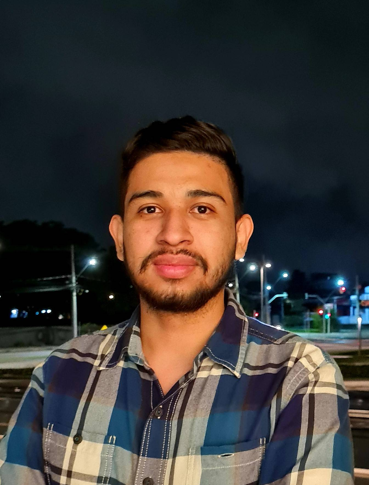

Guillermo Alejandro Mendoza Portillo | WDD 130
Hi! My name is Guillermo Mendoza and I'm from El Salvador, but I currently live in Fortaleza, Brazil. I have lived in Brazil for 4 years, I lived in the cities of São Paulo, Curitiba and now I live in Fortaleza. I have been married to Amanda for 1 year. I am a commercial analyst at a fraud prevention company. Since I was a child, I have been passionate about aircraft and everything related to aviation, I studied airplane mechanics for this same reason. I served a mission in the south of Guatemala City from January 2016 to January 2018, currently serving as first counselor of the elders quorum. I hope to be able to work as a web programmer in the company I currently work for.